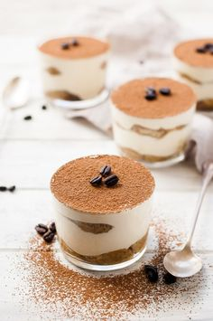
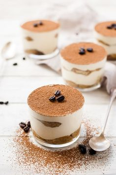

OUR SIGNATURE DISHES


 



ORDER ONLINE
ABOUT US
OUR HISTORY
City View Restaurant roots go as far back as 22 years, we are still in this ever competitive food industry and have upgraded our services for the best of our clients who have supported us through all the past years. We are grateful to say that we have formed a strong bond with our customers.
All along these 22 years, we’ve become an established restaurant/caterer.
WHAT WE DO
At City View Restaurant we are determined to make our clients pleased.
We cook high quality delicious food and cater for many occasions and events from weddings, parties, businesses to schools and universities. We always aim to deliver outstanding service and high standards by employing highly talented staff with great hospitality and culinary skills.
Our cuisine is made up from luscious Middle eastern plates and delightful intercontinental dishes. Not only will you taste our cuisine but you will feel it with the restaurant ambiance through the Mediterranean décor style.
OUR STANDARDS
“To eat is a necessity, but to eat intelligently is an art.”
Our customers are our guests and it has been a tradition for us to please them. And because they expect food to be good and nourishing, we uphold the highest quality assurance standards.
We continuously review all our operational activities to help our customers save costs and improve our sustainability.
OUR CORE VALUES
- Excellent food knowledge
- Excellent service delivery
- Excellent customer service skills
- Excellent product quality
- Constant Improvement
- Excellent atmosphere and competency
OUR QUALITY
“Quality means doing it right when no one is looking.”
How do we maintain quality?
Analyzing all feedback and communication
Regular checks, audits and assessments for continuous improvement
Change ensuring end user recommendations are taken into consideration
Ensure that all hygiene, halal and neatness practices are being done
Work closely with suppliers to develop high quality and innovative products to meet with our customers needs and requirements